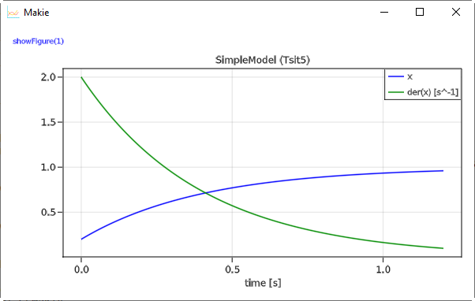
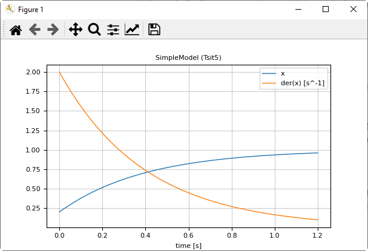

1 Getting Started
A simple differential equation with $x(t) \in \R$
\[T \cdot \frac{dx}{dt} + x = 1; \;\;\; x(t_0) = 0.2\]
can be defined, simulated and plotted with the following commands:
using Modia # reexports exported symbols from
# DifferentialEquations and from Unitful
@usingModiaPlot # Use plot package defined with
# ENV["MODIA_PLOT"] or usePlotPackage(..)
# Define model
SimpleModel = Model(
T = 0.4,
x = Var(init=0.2),
equations = :[T * der(x) + x = 1],
)
# Transform to ODE form
simpleModel = @instantiateModel(SimpleModel)
# Simulate with default integrator Sundials.CVODE_BDF
simulate!(simpleModel, stopTime = 1.2)
# Simulate with a specific integrator (Tsit5) and use a unit for stopTime
simulate!(simpleModel, Tsit5(), stopTime = 1.2u"s")
# Produce a line plot
plot(simpleModel, ("x", "der(x)"))A model is defined with a constructor Model taking a comma separated list of name/value pairs. The model consists of a definition of a parameter T with default value 0.2. Constructor Var with an init key is used to define the initial condition 0.2 of the state x, and one equation. Equations can have a Julia expression on both sides of the equal sign and are given as a quoted array expression :[ ] assigned to key equations.
The macro @instantiateModel(..) symbolically processes the model, in particular solves the equation for the derivative der(x), so the following equation will be used by the integrator:
\[\frac{dx}{dt} = (1 - x) / T\]
Furthermore, a Julia function is generated and compiled to evaluate this equation. @instantiateModel(..) returns an instance containing all the information needed for the next steps.
The first simulate! function performs one simulation with the Modia default integrator Sundials.CVODE_BDF(). The second simulate! call defines the integrator as second argument. Integrator Tsit5 is an adaptive Runge-Kutta method of order 5/4 from Tsitouras. There are > 100 ODE integrators provided. For details, see here. The simulation result is stored inside simpleModel.
Function call plot(..) produces a line plot. Variables to be plotted are defined as tuples or arrays of variable names. Tuples are displayed in one diagram. A Vector or matrix of tuples or strings are displayed as vector or matrix of diagrams. When ENV["MODIA_PLOT"] = "GLMakie" is set, then command plot(..) produces the following image

When ENV["MODIA_PLOT"] = "PyPlot" is set, the following image is produced:

Note, the tool bar of PyPlot provides various interactive commands, for example to zoom into the plot or to store the plot in different formats on file (for example in png or svg format).